Redis基础学习文档
基础篇
Redis数据结构介绍
Redis是一个key-value的数据库，key一般是String类型，value的类型多种多样：
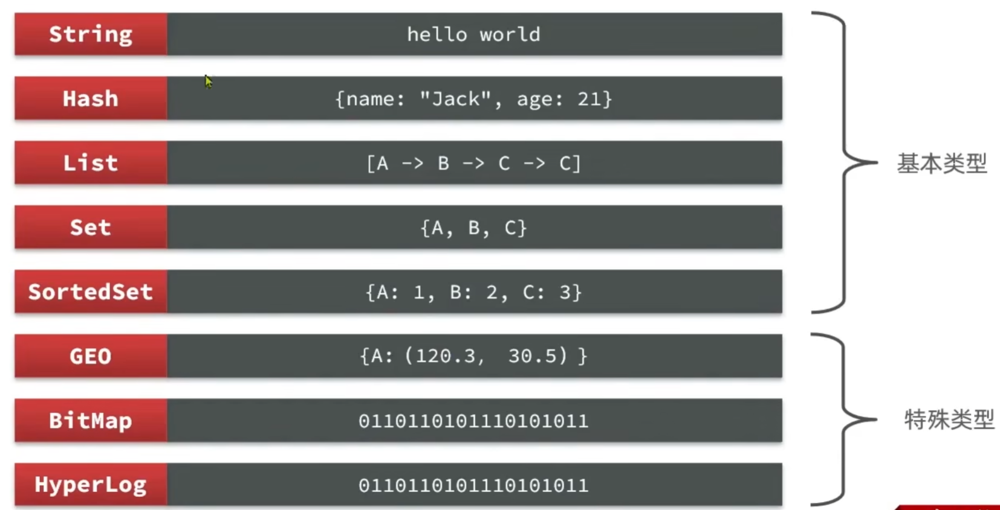
Redis的数据类型Redis的通用命令
通用命令是部分数据类型的，都可以使用的命令，常见的有：
-
KEYS：查看符合模板的所有key。模糊查询的效率不高，又因为Redis是单线程的，所以不建议在生产环境设备上使用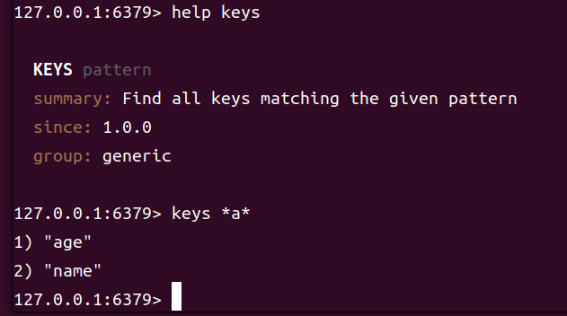
KEYS命令用法 -
DEL：删除一个或多个指定的key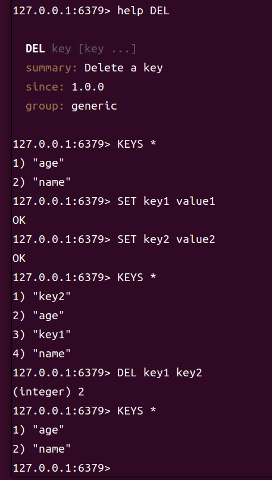
DEL命令用法 -
EXISTS：检查一个或多个key是否存在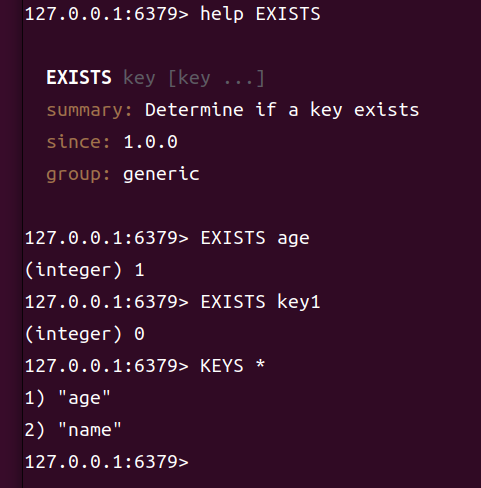
EXISTS命令用法 -
EXPIRE：为一个key设置有效期（过期时间），单位为秒，有效期到期时，key会被自动删除 -
TTL：查看一个key的剩余有效期，单位为秒注意：当一个key设置了过期时间后，如果在过期时间到期之前再次设置了过期时间，那么原来的过期时间会被覆盖掉，新的过期时间会重新计算。并且过期后TTL命令会返回-2，表示key不存在了；如果一个key没有设置过期时间，那么TTL命令会返回-1，表示这个key是永久有效的。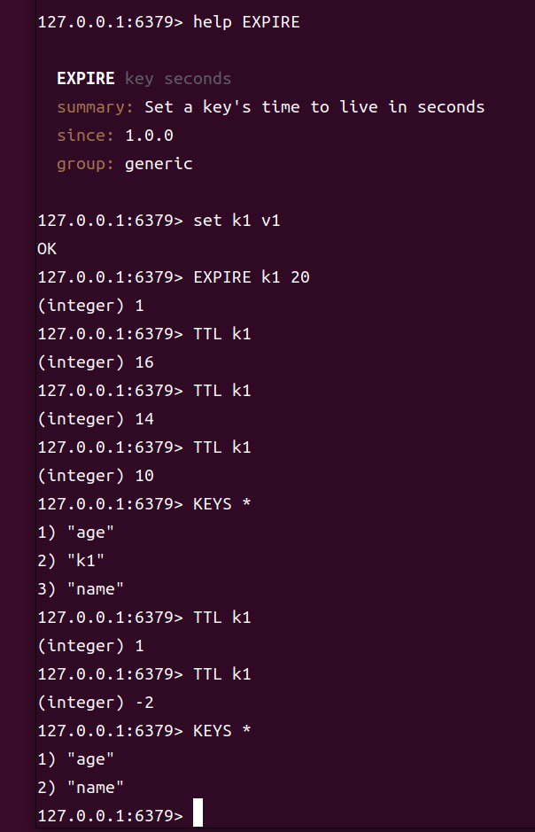
EXPIRE和TTL命令用法
String类型
String类型是Redis中最基本的数据类型，key和value都是字符串类型。不过根据字符串的格式不同，String类型又可以分为以下几种：
- 普通字符串：普通的字符串类型，可以存储任何文本数据，最大长度为512MB。
- 数字字符串：可以存储整数或浮点数，可以进行数学运算和自增操作。
- 二进制字符串：可以存储二进制数据，如图片、音频等非文本数据。
- JSON字符串：可以存储JSON格式的数据，可以方便地进行数据交换和存储复杂的数据结构。
不管是哪种格式，底层都是字节数组形式存储，只不过是编码方式不同。字符串类型的最大空间不能超过512MB，如果超过了这个限制，Redis会返回错误。
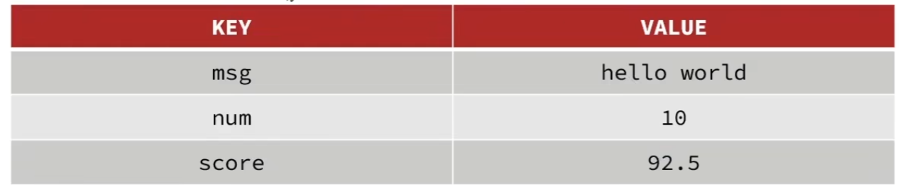
String类型的不同格式String类型的常用命令有：
SET：设置一个key的值，如果key已经存在，则覆盖原来的值GET：获取一个key的值，如果key不存在，则返回nilMSET：同时设置多个key的值MGET：同时获取多个key的值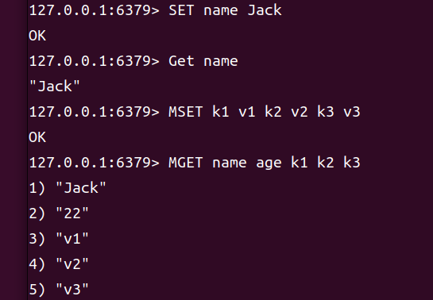
SET、GET、MSET、MGET命令用法INCR：将一个key的值加1，如果key不存在，则先将其设置INCRBY：将一个key的值加上指定的整数，如果key不存在，则先将其设置。也可以实现自减的效果。INCRBYFLOAT：将一个key的值加上指定的浮点数，如果key不存在，则先将其设置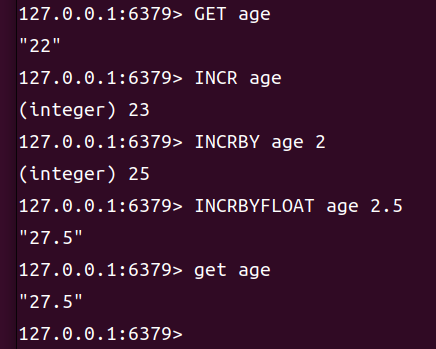
INCR、INCRBY、INCRBYFLOAT命令用法DECR：将一个key的值减1，如果key不存在，则先将其设置DECRBY：将一个key的值减去指定的整数，如果key不存在，则先将其设置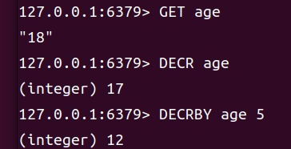
DECR、DECRBY命令用法SETNX：只有当key不存在时才设置key的值，如果key已经存在，则不做任何操作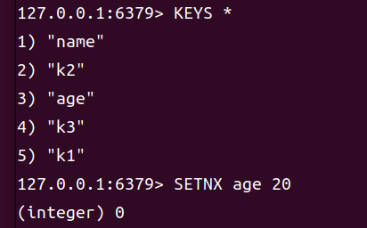
SETNX命令用法SETEX：设置一个key的值，并为key设置过期时间，单位为秒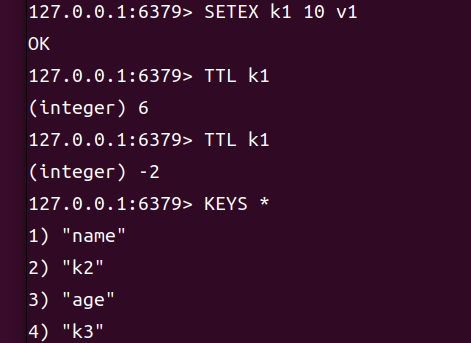
SETEX命令用法PSETEX：设置一个key的值，并为key设置过期时间，单位为毫秒
KEY的层级结构
Redis的key是一个字符串，可以包含任何字符，包括空格和特殊字符。为了方便管理和组织key，Redis没有提供真正的层级结构，但我们可以通过在key中使用分隔符（如冒号:）来模拟层级结构。 例如，我们有一个项目叫heima，有user和product两种不同类型的数据，我们可以这样定义key：
- user相关的key：heima:user:1、heima:user:2、heima:user:3等
- product相关的key：heima:product:1、heima:product:2、heima:product:3等
如果value是一个对象，例如一个user对象，我们可以将其序列化成JSON字符串存储在Redis中，这样就可以方便地进行数据交换和存储复杂的数据结构。
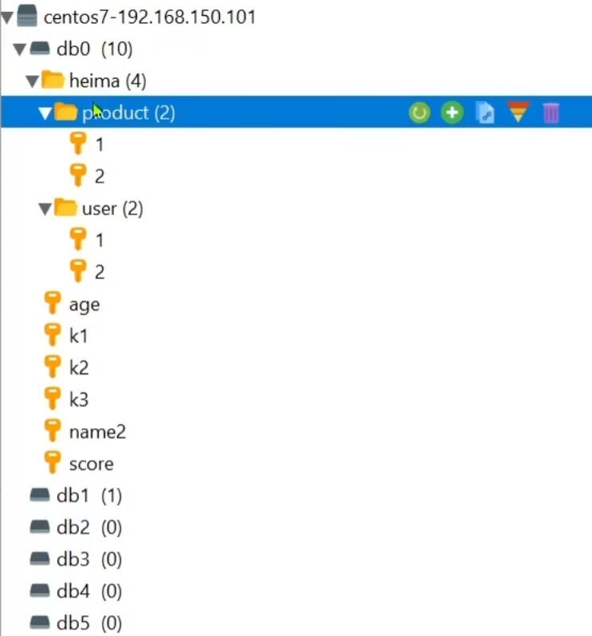
KEY的层级结构Hash类型
Hash类型，也叫散列，其value是一个无序字典，类似于C++中的unordered_map。Hash类型的key是一个字符串，而value是一个包含多个field和value的字典。每个field都是一个字符串，每个value也是一个字符串。主要特征有：
- Hash类型的元素是无序的，不能通过索引访问
- Hash类型的元素是唯一的，不能重复
- Hash类型的元素可以在字典中添加或删除
- 查询速度快，适合于需要频繁查询的场景，例如用户信息、商品信息等。
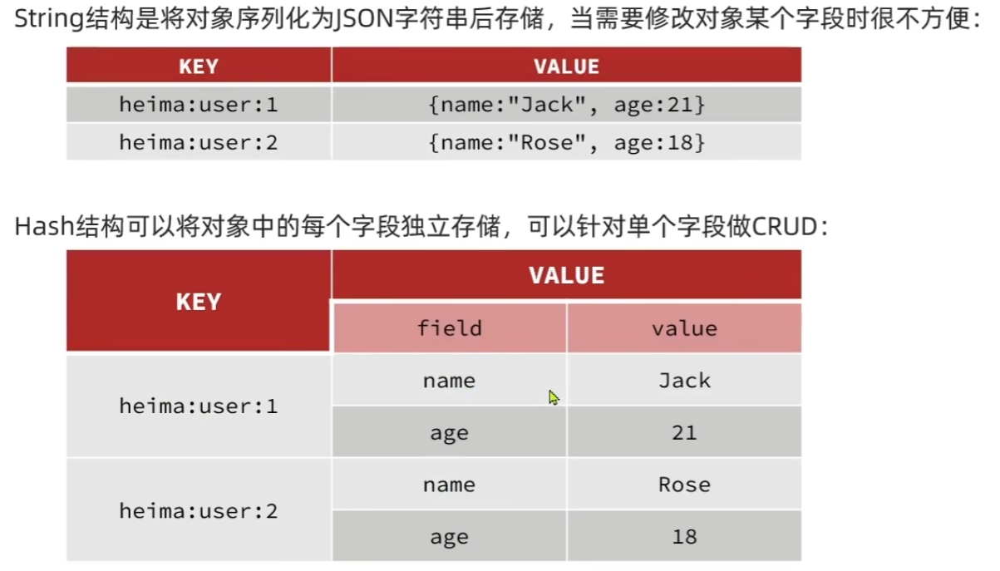
Hash类型的结构
Hash类型的常用命令有：
-
HSET key field value：设置hash表key中field的值为value，如果key不存在，则创建一个新的hash表；如果field已经存在，则覆盖原来的值 -
HGET key field：获取hash表key中field的值，如果key不存在或field不存在，则返回nil -
HMSET key field1 value1 field2 value2 ...：同时设置hash表key中多个field的值，如果key不存在，则创建一个新的hash表；如果field已经存在，则覆盖原来的值 -
HMGET key field1 field2 ...：同时获取hash表key中多个field的值，如果key不存在或field不存在，则返回nil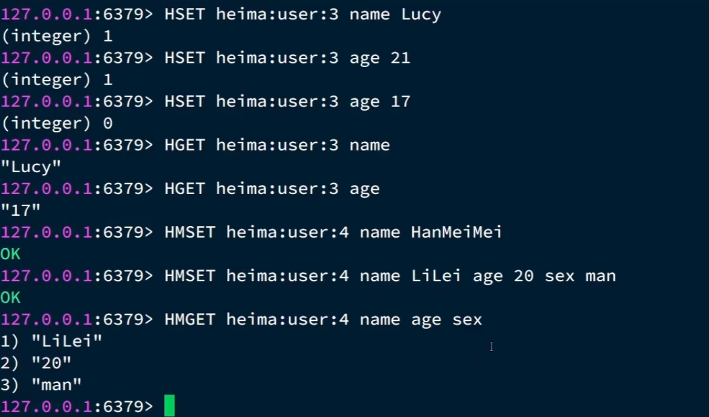
HSET、HGET、HMSET、HMGET命令用法 -
HGETALL key：获取hash表key中所有field和value的值，如果key不存在，则返回nil -
HKEYS key：获取hash表key中所有field的值，如果key不存在，则返回nil -
HVALS key：获取hash表key中所有value的值，如果key不存在，则返回nil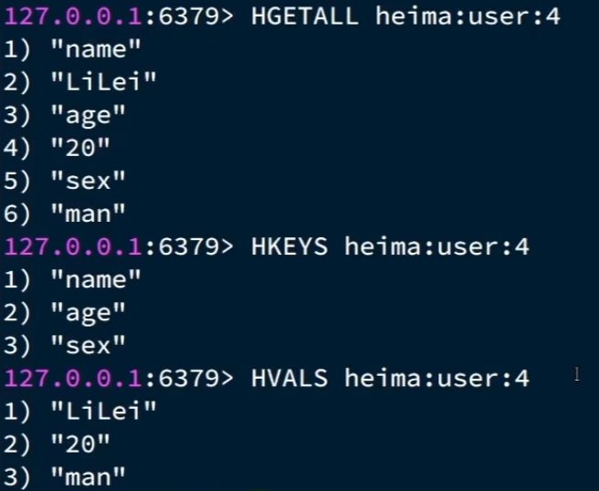
HGETALL、HKEYS、HVALS命令用法 -
HDEL key field1 field2 ...：删除hash表key中指定的field，如果key不存在或field不存在，则不做任何操作 -
HLEN key：获取hash表key中field的数量，如果key不存在，则返回0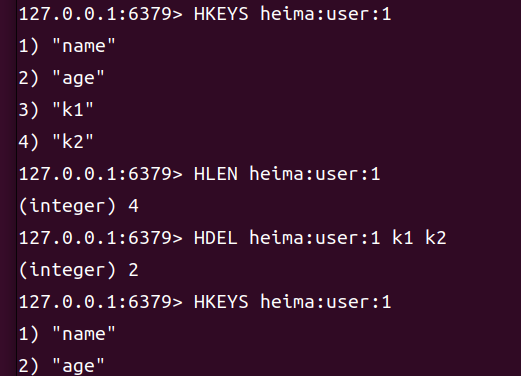
HDEL、HLEN命令用法 -
HEXISTS key field：检查hash表key中是否存在field，如果key不存在或field不存在，则返回0；如果存在，则返回1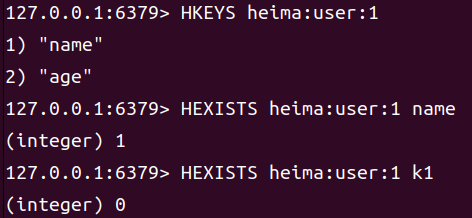
HEXISTS命令用法 -
HINCRBY key field increment：将hash表key中field的值加上指定的整数increment，如果key不存在，则先创建一个新的hash表；如果field不存在，则先将其设置为0；如果field的值不是一个整数，则返回错误 -
HSETNX key field value：只有当hash表key中field不存在时才设置field的值为value，如果key不存在，则先创建一个新的hash表；如果field已经存在，则不做任何操作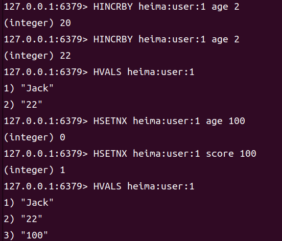
HINCRBY、HSETNX命令用法
List类型
Redis的List类型与C++中的std::list类似，是一个双向链表。List类型的key是一个字符串，而value是一个包含多个元素的列表，每个元素都是一个字符串。特征也与std::list类似：
- List类型的元素是有序的，可以通过索引访问
- List类型的元素可以重复
- List类型的元素可以在头部或尾部添加或删除
- 查询速度一般，适合于需要频繁插入和删除的场景，例如消息队列、任务列表等。 常用来存储一个有序数据，例如朋友圈点赞列表、微博评论列表等。
List类型的常用命令有：
-
LRANGE key start stop：获取列表key中指定范围内的元素，start和stop都是索引，索引从0开始，负数表示从列表尾部开始计算，例如-1表示最后一个元素，-2表示倒数第二个元素，以此类推。如果key不存在，则返回nil；如果start或stop超出范围，则返回空列表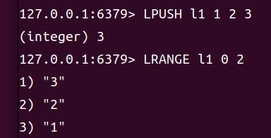
LRANGE命令用法 -
LPUSH key value1 value2 ...：将一个或多个值插入到列表key的头部，如果key不存在，则创建一个新的列表；如果key存在但不是列表类型，则返回错误 -
LPOP key：移除并返回列表key的头部元素，如果key不存在或列表为空，则返回nil -
RPUSH key value1 value2 ...：将一个或多个值插入到列表key的尾部，如果key不存在，则创建一个新的列表；如果key存在但不是列表类型，则返回错误 -
RPOP key：移除并返回列表key的尾部元素，如果key不存在或列表为空，则返回nil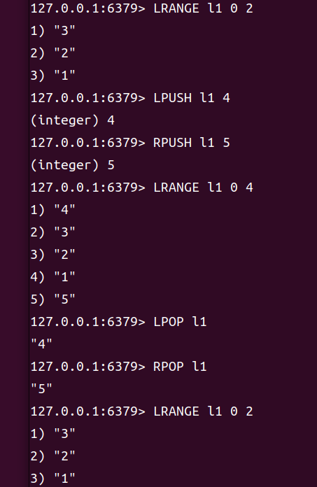
LPUSH、RPUSH命令用法 -
LLEN key：获取列表key中元素的数量，如果key不存在，则返回0 -
LINDEX key index：获取列表key中指定索引位置的元素，如果key不存在或索引超出范围，则返回nil -
LSET key index value：设置列表key中指定索引位置的元素为value，如果key不存在或索引超出范围，则返回错误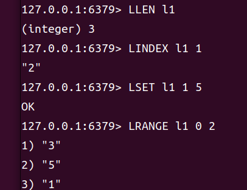
LLEN、LINDEX、LSET命令用法 -
BLPOP key [key ...] timeout：移除并返回一个或多个列表key的头部元素，如果key不存在或列表为空，则返回nil；如果timeout为0，表示永远等待；如果timeout为正整数，表示等待指定的秒数，如果在等待期间有元素被添加到列表中，则立即返回；如果在等待期间没有元素被添加到列表中，则返回nil -
BRPOP key [key ...] timeout：移除并返回一个或多个列表key的尾部元素，如果key不存在或列表为空，则返回nil；如果timeout为0，表示永远等待；如果timeout为正整数，表示等待指定的秒数，如果在等待期间有元素被添加到列表中，则立即返回；如果在等待期间没有元素被添加到列表中，则返回nilBLPOP和BRPOP命令常用于实现消息队列的功能，例如生产者将消息推送到列表中，消费者从列表中弹出消息进行处理。如果消费者在等待期间没有收到消息，可以设置一个超时时间来避免无限等待。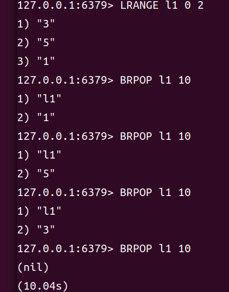
BLPOP、BRPOP命令用法
Set类型
Redis的Set类型是一种无序集合，类似于C++中的std::unordered_set，可以看作是一个value为null的Hash类型。因为也是一个hash表，所以具备与Hash类型相似的特征：
- Set类型的元素是无序的，不能通过索引访问
- Set类型的元素是唯一的，不能重复
- Set类型的元素可以在集合中添加或删除
- 查询速度快，适合于需要频繁查询的场景，例如标签系统、好友关系等。
Set类型的常用命令有：
-
SADD key member1 member2 ...：将一个或多个成员添加到集合key中，如果key不存在，则创建一个新的集合；如果key存在但不是集合类型，则返回错误 -
SREM key member1 member2 ...：从集合key中移除一个或多个成员，如果key不存在或成员不存在，则不做任何操作 -
SCARD key：获取集合key中成员的数量，如果key不存在，则返回0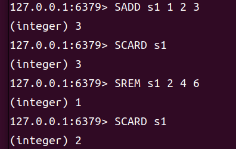
SADD、SREM、SCARD命令用法 -
SISMEMBER key member：检查集合key中是否存在成员，如果key不存在或成员不存在，则返回0；如果存在，则返回1 -
SMEMBERS key：获取集合key中所有成员的值，如果key不存在，则返回nil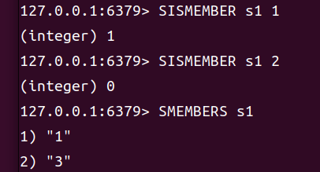
SISMEMBER、SMEMBERS命令用法 -
SINTER key1 key2 ...：获取一个或多个集合key的交集，如果key不存在，则返回nil；如果key存在但不是集合类型，则返回错误 -
SUNION key1 key2 ...：获取一个或多个集合key的并集，如果key不存在，则返回nil；如果key存在但不是集合类型，则返回错误 -
SDIFF key1 key2 ...：获取一个或多个集合key的差集，如果key不存在，则返回nil；如果key存在但不是集合类型，则返回错误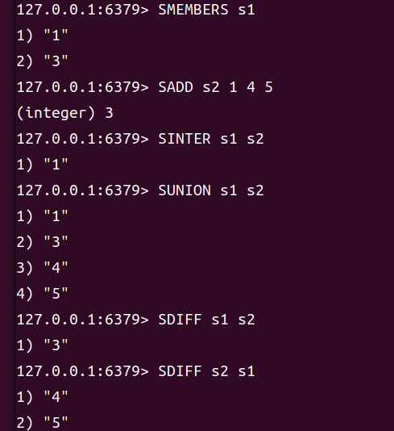
SINTER、SUNION、SDIFF命令用法
Sorted Set类型
Redis的SortedSet类型是一个可排序的set几何，与C++中的std::set类似，但底层数据结构却差别很大。SortedSet中的每一个元素都带有一个分数（score），Redis会根据分数来对元素进行排序。底层实现是一个跳表（skip list），跳表是一种基于链表的数据结构，通过增加多级索引来提高查询效率。SortedSet具备以下特性：
- SortedSet类型的元素是有序的，可以通过索引访问
- SortedSet类型的元素是唯一的，不能重复
- SortedSet类型的元素可以在集合中添加或删除
- 查询速度快，适合于需要频繁查询的场景，例如排行榜、社交网络等。 因为SortedSet的可排序特性，经常被用来实现排行榜这样的功能。
SortedSet类型的常用命令有：
-
ZADD key score1 member1 [score2 member2 ...]：将一个或多个成员添加到有序集合key中，并为每个成员设置分数，如果key不存在，则创建一个新的有序集合；如果key存在但不是有序集合类型，则返回错误；如果成员已经存在，则更新其分数 -
ZREM key member1 member2 ...：从有序集合key中移除一个或多个成员，如果key不存在或成员不存在，则不做任何操作 -
ZSCORE key member：获取有序集合key中成员的分数，如果key不存在或成员不存在，则返回nil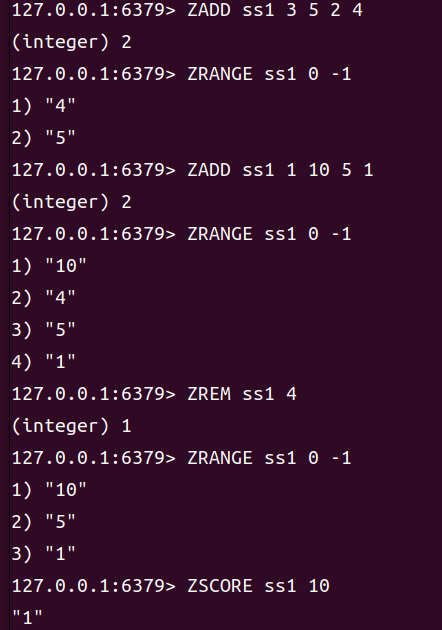
ZADD、ZREM、ZSCORE命令用法 -
ZRANK key member：获取有序集合key中成员的排名，排名从0开始，如果key不存在或成员不存在，则返回nil -
ZREVRANK key member：获取有序集合key中成员的反向排名，排名从0开始，如果key不存在或成员不存在，则返回nil -
ZCARD key：获取有序集合key中成员的数量，如果key不存在，则返回0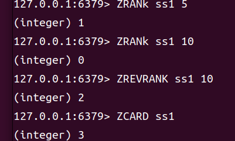
ZRANK、ZREVRANK、ZCARD命令用法 -
ZCOUNT key min max：获取有序集合key中分数在min和max之间的成员数量，如果key不存在，则返回0；如果key存在但不是有序集合类型，则返回错误 -
ZINCRBY key increment member：将有序集合key中成员的分数增加increment，如果key不存在，则先创建一个新的有序集合；如果成员不存在，则先将其设置为0；如果成员的分数不是一个数字，则返回错误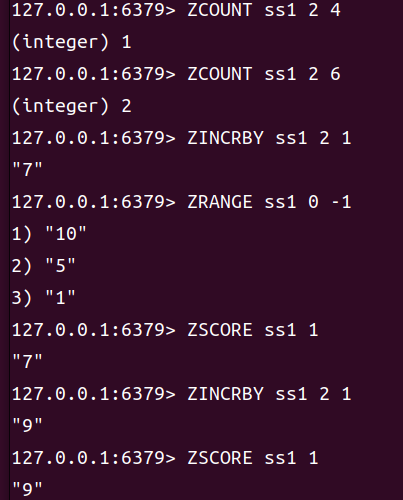
ZCOUNT、ZINCRBY命令用法 -
ZRANGE key start stop [WITHSCORES]：获取有序集合key中指定范围内的成员，start和stop都是索引，索引从0开始，负数表示从集合尾部开始计算，例如-1表示最后一个成员，-2表示倒数第二个成员，以此类推。如果key不存在，则返回nil；如果start或stop超出范围，则返回空列表；如果指定了WITHSCORES选项，则返回成员和分数的列表 -
ZREVRANGE key start stop [WITHSCORES]：获取有序集合key中指定范围内的成员，start和stop都是索引，索引从0开始，负数表示从集合尾部开始计算，例如-1表示最后一个成员，-2表示倒数第二个成员，以此类推。如果key不存在，则返回nil；如果start或stop超出范围，则返回空列表；如果指定了WITHSCORES选项，则返回成员和分数的列表 -
ZRANGEBYSCORE key min max [WITHSCORES]：获取有序集合key中分数在min和max之间的成员，如果key不存在，则返回nil；如果key存在但不是有序集合类型，则返回错误；如果指定了WITHSCORES选项，则返回成员和分数的列表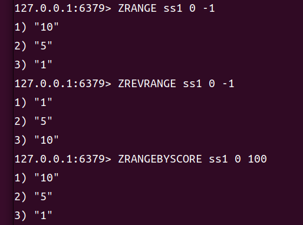
ZRANGE、ZREVRANGE、ZRANGEBYSCORE命令用法 -
ZINTER key numkeys key1 key2 ...：获取一个或多个有序集合key的交集，如果key不存在，则返回nil；如果key存在但不是有序集合类型，则返回错误；如果指定了WITHSCORES选项，则返回成员和分数的列表 -
ZUNION key numkeys key1 key2 ...：获取一个或多个有序集合key的并集，如果key不存在，则返回nil；如果key存在但不是有序集合类型，则返回错误；如果指定了WITHSCORES选项，则返回成员和分数的列表 -
ZDIFF key numkeys key1 key2 ...：获取一个或多个有序集合key的差集，如果key不存在，则返回nil；如果key存在但不是有序集合类型，则返回错误；如果指定了WITHSCORES选项，则返回成员和分数的列表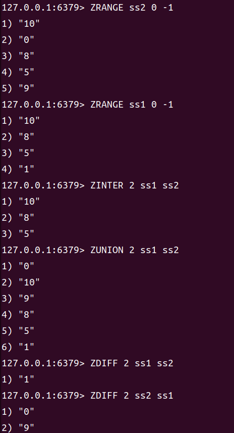
ZINTER、ZUNION、ZDIFF命令用法 -
ZINTERSTORE destination numkeys key1 key2 ...：计算一个或多个有序集合key的交集，并将结果存储在destination中，如果destination已经存在，则覆盖原来的值；如果key不存在，则返回nil；如果key存在但不是有序集合类型，则返回错误 -
ZUNIONSTORE destination numkeys key1 key2 ...：计算一个或多个有序集合key的并集，并将结果存储在destination中，如果destination已经存在，则覆盖原来的值；如果key不存在，则返回nil；如果key存在但不是有序集合类型，则返回错误 -
ZDIFFSTORE destination numkeys key1 key2 ...：计算一个或多个有序集合key的差集，并将结果存储在destination中，如果destination已经存在，则覆盖原来的值；如果key不存在，则返回nil；如果key存在但不是有序集合类型，则返回错误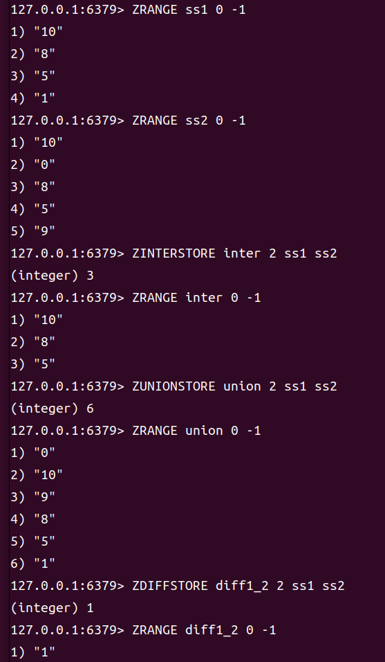
ZINTERSTORE、ZUNIONSTORE、ZDIFFSTORE命令用法